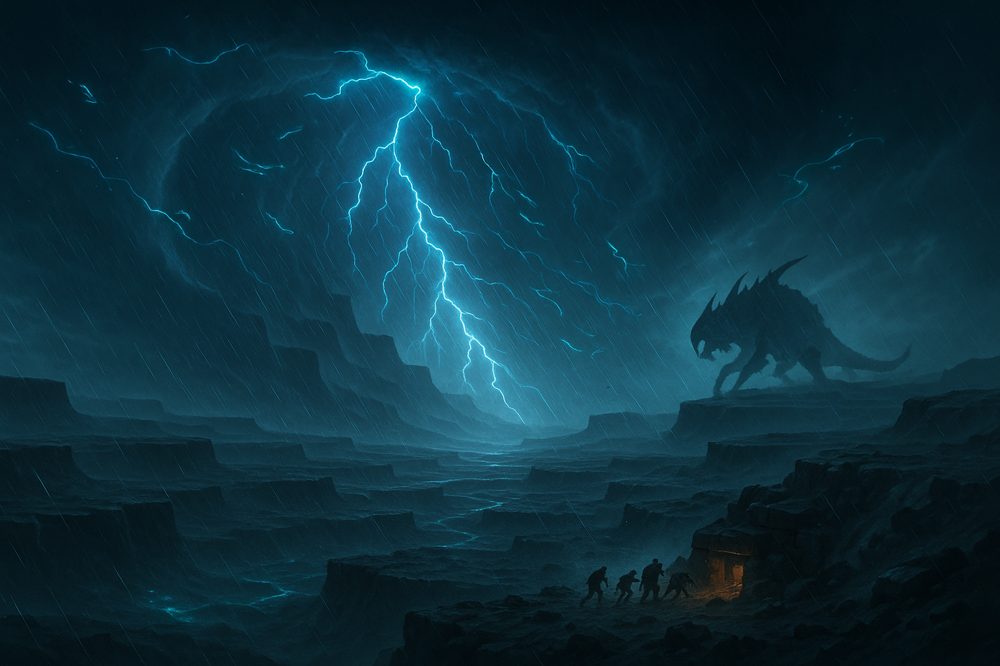

The setting in the way of kings has a massive impact on the story. From the magic system, to the actual plot, the settings have an effect.
Without the setting the magic system would not be possible. The continent of Roshar is victim to massive Highstorms. These storms imbue objects with Stormlight. Characters like Szeth can then absorb the energy from stormlight and use it to alter things. Szeth can surgebind, meaning he can alter the laws of gravity on an object or person, including himself. This is how he runs on walls.
This whole story is during the war between two of the nations on the continent of Roshar. This war takes place on the shattered plains. A series of plateaus and canyons formed by the highstorms. This setting specifically is why the war lasts so long, as it is so difficult to navigate. This story taking place in a continent with many nations, allows for the tensions of a possible mass conflict. Most of Roshar is very barren, due to the highstorms. Creating a heavy mood from the landscape. This eeriness adds to dark themes. Such as Kaladin's death drive, and depression. Or Dalinars's madness, And Adolin’s hotheadedness. All of this is propelled by the mood generated from the setting.